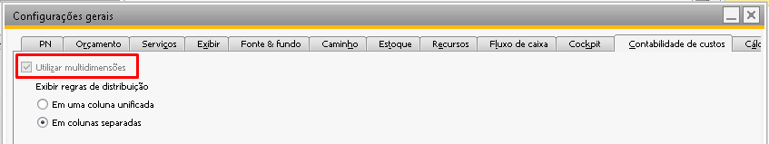

Trabalhando com multidimensões
Ao utilizar o add-on BR One, observará que o campo ‘Regra de Distribuição’ está presente em diversas telas do sistema. A maneira como você visualiza e utiliza essa configuração pode variar de acordo com a configuração do SAP.
Caso o parâmetro ‘Utilizar multidimensões’ esteja ativado, será possível trabalhar com até cinco regras de distribuição dentro do BR One. Se a opção estiver desmarcada, será possível selecionar apenas uma regra de distribuição.
Nas telas que exibem o campo ‘Regra de distr.’, haverá duas configurações distintas. Quando a opção de multidimensões estiver desmarcada, a configuração será a seguinte: a regra de distribuição deve ser preenchida diretamente no campo, e o campo […] permanecerá desativado.
E caso a opção de multidimensões estiver marcada, o campo de regra de distribuição estará inativo e bloqueado para uso, sendo necessário usar o campo […] para preenchimento das regras.
As telas do add-on BR One que possuem o campo ‘Regra de distribuição’ são as telas abaixo
Roteiro
Ordem de produção
Saída de insumos
Entrada de produto acabado
Assistente de MRP (aba recomendações)
Manutenção de OPs
Apontamento de refugo
As regras são aplicadas de acordo com cada processo. Segue abaixo uma relação dos processos onde utilizam regras de distribuição e as fontes de onde o BR One buscará essas informações.
Ordem de Produção
OP criada manualmente (abrir a tela, preencher o Nº do produto): Utiliza as mesmas regras preenchidas no roteiro informado no cabeçalho da OP.
Processo Make to order:
Se usada a opção ‘Abrir OPs para PAs do pedido’: Utiliza as mesmas regras do pedido de vendas.
Se usada a opção ‘Abrir OPs para PAs e semi-acabados do pedido’: Utiliza as mesmas regras do pedido para a OP do item pai, e as regras do roteiro para as OPs dos itens semi-acabados.
Se o pedido de venda não tiver regra de distribuição: Utiliza as mesmas regras do roteiro padrão do item pai.
Processo MRP:
OP derivada do MRP a partir de documento de demanda: Utiliza as mesmas regras do documento de demanda.
OP derivada do MRP sem documento de demanda: Utiliza as mesmas regras preenchidas no roteiro do item pai da OP.
Saída de insumo
Utiliza as mesmas regras de distribuição informados na tela de Saída de insumos.
Saída de insumo (refugo)
Utiliza as mesmas regras de distribuição informados na tela de Saída de insumos.
Entrada de PA
Utiliza as mesmas regras de distribuição informados na tela de Entrada de produto acabado.
Entrada de PA (refugo)
Mesmas regras de distribuição informados na tela de Entrada de produto acabado para os itens baixados.
Entrada de Subproduto
Utiliza as mesmas regras de distribuição informados na tela de Entrada de produto acabado vinculada a entrada do subproduto.
Apontamento de refugo:
Utiliza as mesmas regras informadas na tela de Apontamento de refugo para os itens que retornarem ao estoque.
LCM de GGF Arbitrado
Utiliza as mesmas regras informadas na tela de Entrada de produto acabado vinculadas ao LCM criado.
LCM de desvio de custo:
Utiliza as mesmas regras informadas na tela da OP.
Reavaliação de desvio de custo:
Utiliza as mesmas regras informadas na tela da OP.
Vale lembrar que o BR One segue as mesmas diretrizes do SAP para o preenchimento das regras de distribuição nos LCMs. Assim, se a conta contábil utilizada no LCM for do tipo Receita ou Despesas, serão aplicadas as regras de distribuição. Caso a conta contábil seja do tipo Outros, a regra não será aplicada.